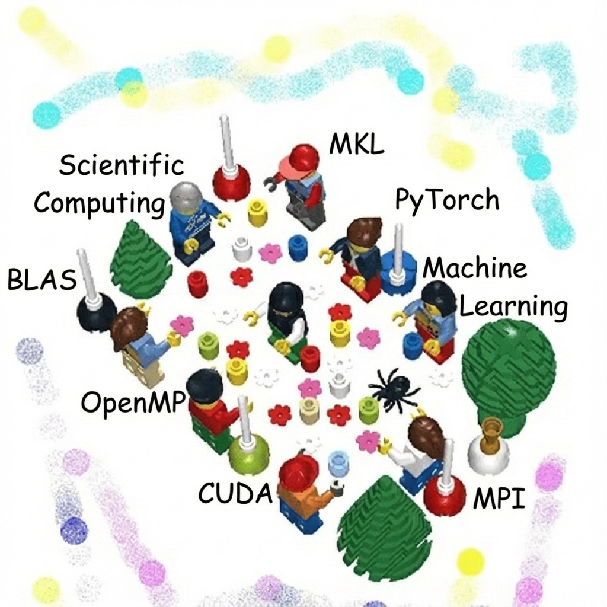

Previously, I completed my B.S. in Computer Science & Engineering at the University of California, Merced.
I also obtained a minor in Applied Mathematics.
I am broadly interested in high performance and parallel computing with applications to Deep Learning and
Computational Physics.
More specifically I am interested in designing efficient collective communication primitives for emerging
workloads, tensor optimizations, and scalable scientific machine learning.
My research has been supported by Los Alamos National Laboratory, Lawrence Livermore National Laboratory and
Google-CASHI.
See my research interests here
I am inspired and motivated through problems that arise in Deep Learning and Computational Physics applications.